O Naruto Clássico é a primeira fase da famosa franquia de mangá e anime criada por Masashi Kishimoto.
A trama acompanha a infância e o início da adolescência de Naruto Uzumaki, um garoto órfão da Vila da Folha (Konoha) que sonha em se tornar Hokage, o líder e ninja mais forte de sua vila. Isolado pelos moradores por carregar selada em seu corpo a temida Raposa de Nove Caudas (Kurama), ele busca amizade, aceitação e reconhecimento através do seu "jeito ninja" de nunca desistir.
O Naruto Clássico é a primeira fase do anime e mangá criado por Masashi Kishimoto, contando com 220 episódios divididos em 9 temporadas. A exibição original ocorreu entre 3 de outubro de 2002 e 8 de fevereiro de 2007.
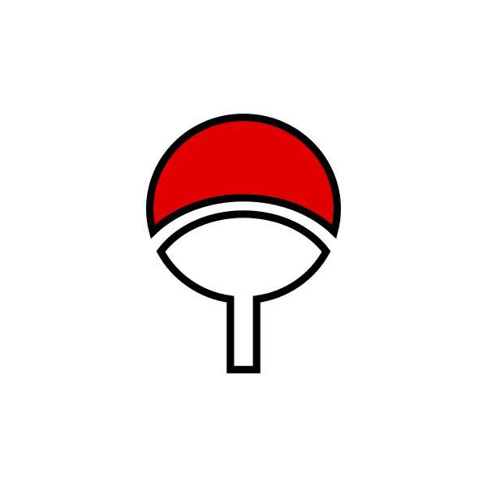
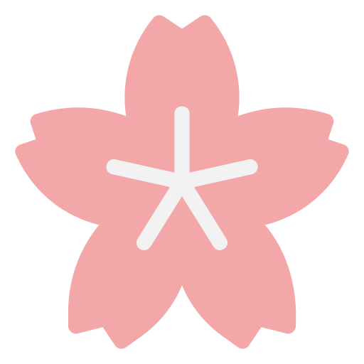
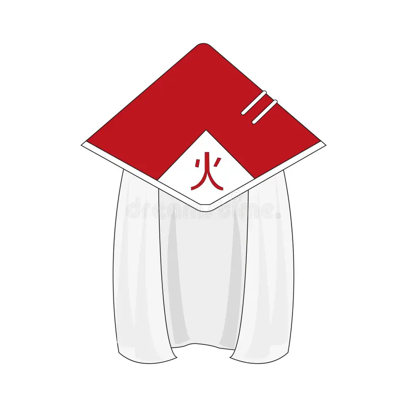
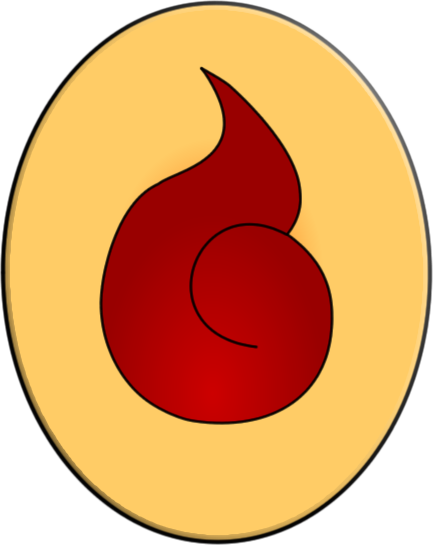
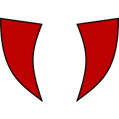
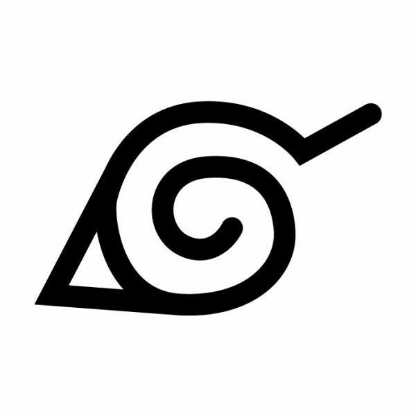
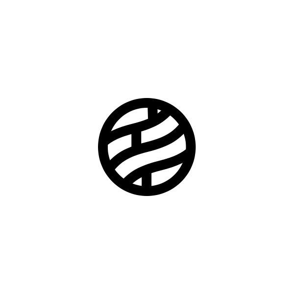

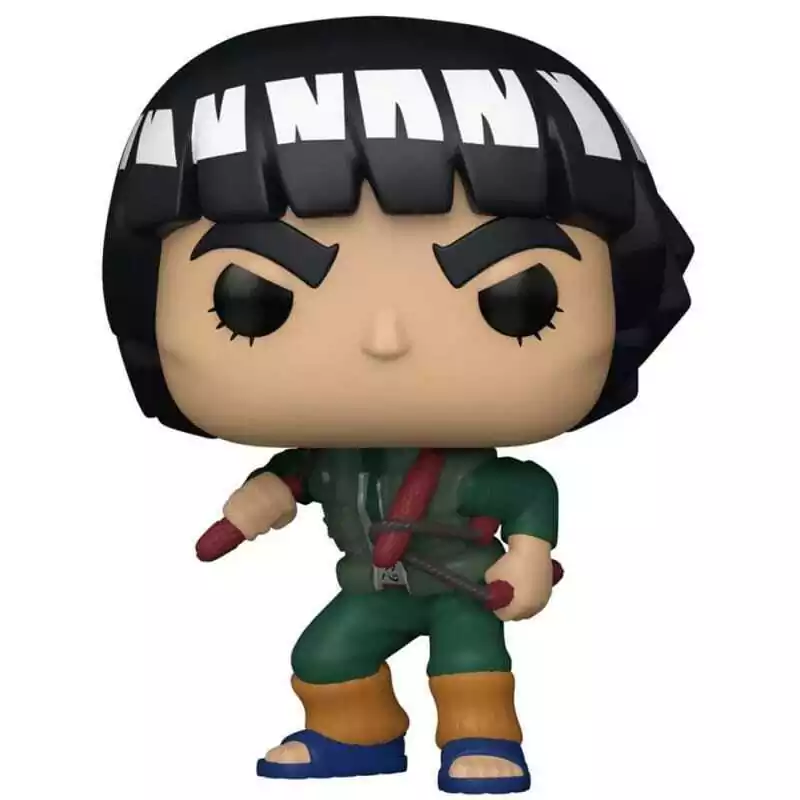
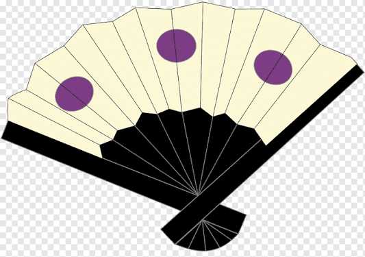

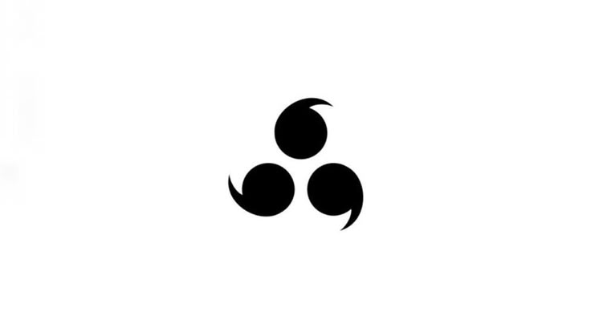
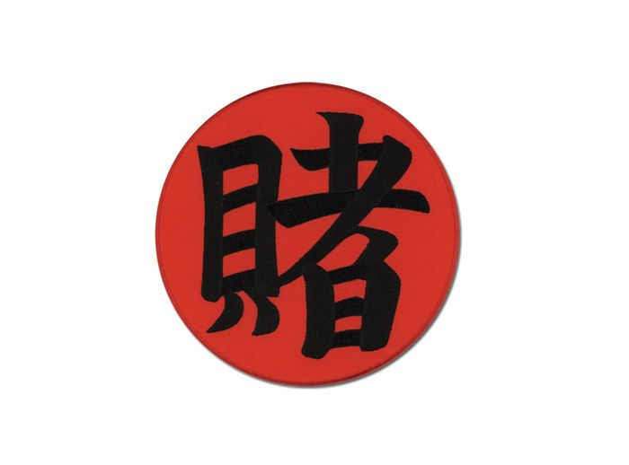
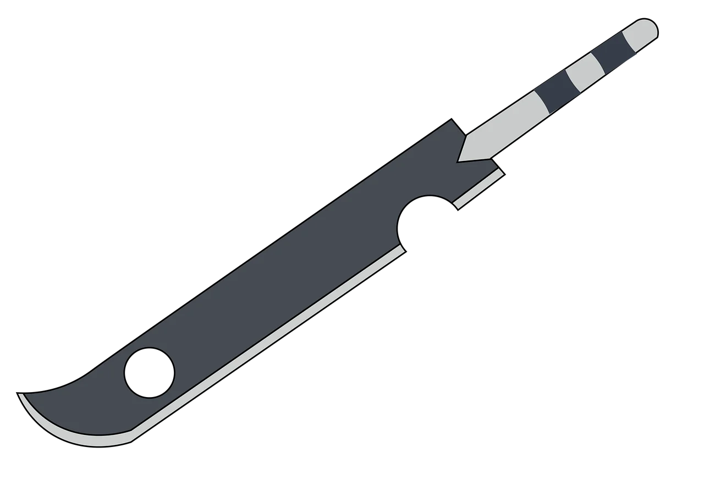
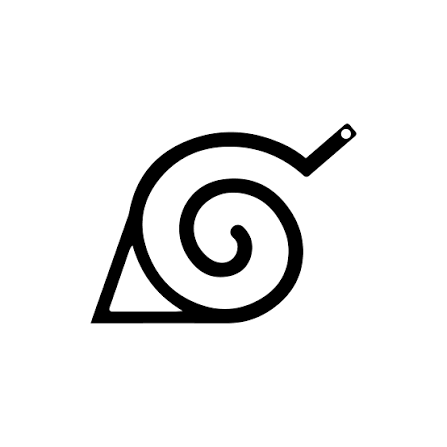
Abertura 1 - R★O★C★K★S (Hound Dog)
Abertura 2 - Haruka Kanata (Asian Kung-Fu Generation)
Abertura 3 - Kanashimi wo Yasashisa ni (Little by Little)
Abertura 4 - GO!!! (FLOW)
Abertura 5 - Seishun Kyousoukyoku (Sambomaster)
Abertura 6 - No Boy, No Cry (Stance Punks)
Abertura 7 - Namikaze Satellite (Snowkel)
Abertura 8 - Remember (FLOW)
Abertura 9 - Yura Yura (Hearts Grow)